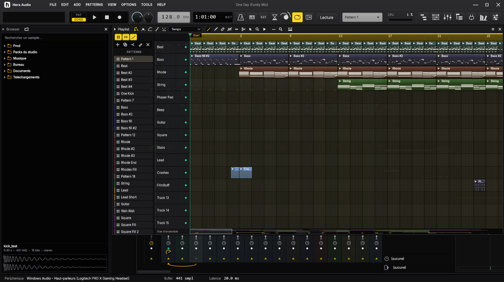
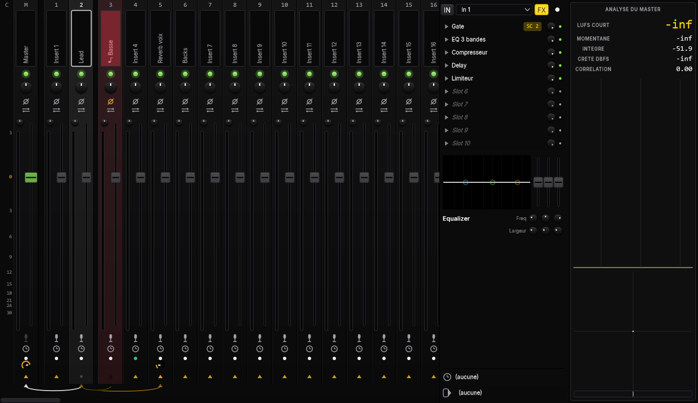
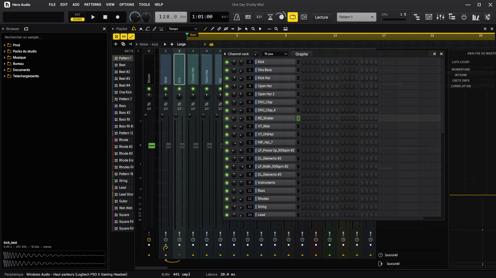

Faisle beat.
Le studio Windows des beatmakers, des ingés son et des artistes. Tes projets FL Studio s'ouvrent dedans, tes réflexes aussi.
Windows 10 et 11. Essai complet 14 jours, sans carte bancaire.

Un studio, trois façons de bosser.
Tu viens de FL : tout est à sa place, et ça va plus vite.
- Tes .flp s'ouvrentPatterns, playlist, canaux, mixer, automations et réglages des plugins repris.
- Channel rack et pasLe séquenceur, les canaux, tes samples et tes VST, comme tu les ranges déjà.
- Piano roll avec accordsAccords, gammes, Riff machine, vélocité au zoom, triolets.
- Key & BPMGlisse un sample : sa tonalité et son tempo s'affichent.
Le mix et le master, sans aller chercher un plugin pour tout.
- Analyse du masterLUFS, crête, spectre et image stéréo dans leur propre colonne, à côté du mixer.
- EQ dynamiqueChaque bande peut réagir au signal : seuil, plage et vitesse.
- Envois par câblesUn clic pour relier, un bouton de niveau sur chaque lien, sidechain inclus.
- Latence sous contrôleCompensation automatique, réglable tranche par tranche.
Tu poses ta voix, tu sors ton morceau. C'est tout.
- Piste voix en un clicMicro armé, chaîne de traitement et envoi en réverbe, prêts à enregistrer.
- La prise en directLa forme d'onde se dessine pendant que tu enregistres.
- Versions du morceauGarde plusieurs arrangements du même son et passe de l'un à l'autre.
- Galerie des projetsTes sons avec leur pochette, et leurs exports à réécouter.
Ce qui va plus vite ici.
Tout exporter d'un coup.
EasyExport sort le mixage en WAV et MP3, le MIDI, les pistes du mixer et chaque canal, rangés dans leurs dossiers.
Ouvrir ton projet FL.
Glisse ton .flp : le morceau est là, avec ses volumes, ses envois et ses automations.
Voir ton LUFS en jouant.
Le niveau du master s'affiche en permanence à côté du mixer, sans rien ajouter.
Couper tous les effets.
Un interrupteur par tranche, un autre pour tout le projet : tu compares en une seconde.
Rester à jour.
Hera te prévient quand une version sort et s'installe tout seul.
Essaie le Channel rack. Là.
Clique les cases, puis lecture. Espace marche aussi.


Un prix. Une fois.
19,99 €
- Toutes les mises à jour de la version 1
- Utilisable sur 3 ordinateurs
- 14 jours d'essai complet avant de payer
- TVA et facture gérées automatiquement
Après l'achat, ta clé arrive par e-mail. Dans Hera : Options, Licence, colle la clé.
Questions
Qu'est-ce qui se passe à la fin de l'essai ?
Hera s'ouvre toujours et tes projets restent lisibles. Pour enregistrer et exporter, il faut activer une licence.
Mes projets FL Studio s'ouvrent vraiment ?
Oui, les fichiers .flp récents (FL 20 à FL 26). Les effets natifs de FL sont remplacés par l'effet Hera le plus proche, avec leurs réglages quand c'est possible ; tes VST sont rechargés avec leurs presets.
Je change d'ordinateur, je fais comment ?
Dans Hera : Options, Licence, « Retirer de ce PC », ou depuis ton espace client. Active ensuite la clé sur le nouveau PC.
Ça marche sur Mac ?
Pas encore : Hera Audio est pour Windows 10 et 11 (64 bits).
J'ai perdu ma clé.
Ouvre ton espace client avec l'adresse e-mail de l'achat : la clé y est toujours.